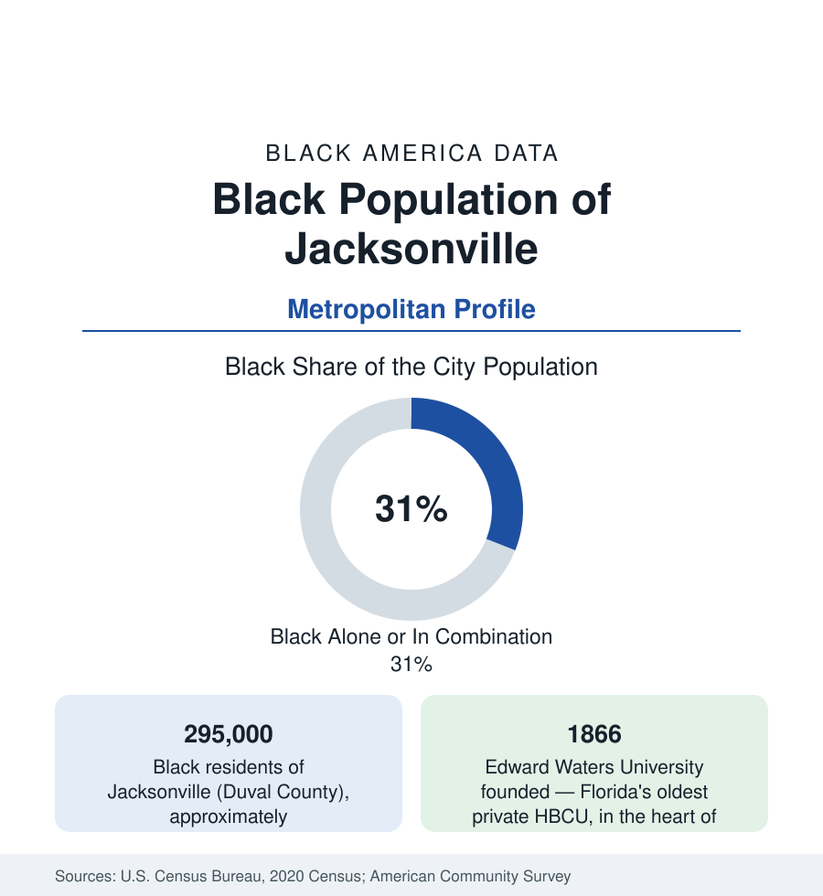

Black Cities
Black Jacksonville: Florida's Largest Land City, Its Black Anchor
Jacksonville holds about 295,000 Black residents — nearly a third of the consolidated city — in the Bold City's port and naval economy. The census profile.

Jacksonville holds about 295,000 Black residents — Black alone or in combination, roughly 31 percent of the consolidated city-county's 985,000 people — the largest Black population of any Florida metro outside Miami and Orlando, and one of the largest Black city populations in the South. Jacksonville's Black community was built by the port, the railroads, the naval stations, and one of the great insurance-and-finance stories in Black business history. This article profiles the population in the census data.
LaVilla, Durkeeville, and the Northwest
The community's historic geography centers on the northwest quadrant. LaVilla, just west of downtown, was the era's 'Harlem of the South' in its boosters' phrase — Ashley Street's clubs, the Ritz Theatre (preserved today as a museum), and a commercial district serving the railroad and port workforce. Durkeeville and the districts around it (Grand Park, Sherwood Forest, Moncrief's corridor) formed the residential core, and Edward Waters University — founded in 1866, Florida's oldest private historically Black institution — anchored Kings Road. The modern Black population remains concentrated in the Northside and Northwest: the census tracts north of the St. Johns River and west of I-95 record the city's highest Black shares, while the Southside's new subdivisions and the Beaches hold growing, dispersed communities. The northwest's indicators — income, health access, retail investment — sit at the difficult end of the city's tables in the standard pattern, against metro medians pulled up by the suburban counties.
Insurance, Port, and Navy: The Economic Layers
Jacksonville's Black business history holds a singular chapter: the Afro-American Life Insurance Company, founded in 1901 by Abraham Lincoln Lewis, built a pension-and-insurance enterprise that employed generations of Black Jacksonvillians and anchored an entrepreneurial class whose summer colony (American Beach, on Amelia Island — the oceanfront resort Lewis founded for his employees in the segregation era, now a historic district) is the community's signature heritage asset. The working economy's pillars are the port (JAXPORT is among the East Coast's major vehicle and container ports), the naval complex (Naval Air Station Jacksonville and Mayport — the military economy is among the metro's largest employers), rail (CSX is headquartered here), banking and insurance back offices, and health care. Black employment follows that distribution, with the public and military-linked layers providing the middle-class anchor the occupation data show.
The Consolidated City's Arithmetic
Jacksonville's 1968 consolidation — the city merged with Duval County into a single government — makes its city statistics unusually metro-like: the 'city' figures in these tables cover nearly the whole county, so Jacksonville's 31 percent Black share is properly compared with other metros' county figures rather than their central cities'. The metro beyond Duval (Clay, St. Johns, Nassau, Baker counties) adds roughly 60,000 Black residents at much lower shares — St. Johns County, the affluent growth pole south of the city, is in the low single digits — making the metro share about 23 percent. The consolidated structure also makes Jacksonville's municipal data a direct read on its Black population: the city government, schools (Duval County Public Schools is among the nation's largest districts), and services are the Black community's own institutions at a scale few profiles match.
Indicators and Change
The estimates show steady Black growth — the Northside stable, the Southside and Clay County suburbs gaining, the total tracking the metro's overall boom at a slightly slower rate so the share edges down gradually. Black median household income runs below the Florida metros' leaders; the health data of the public health section place Duval's Black outcomes in the state's urban pattern; Edward Waters and the University of North Florida and Jacksonville University carry the higher-education layer, with the HBCU's recent growth a tracked positive in the enrollment data. The port's expansion and the naval presence give the economy a federal ballast the other Florida metros lack.
Reading the Jacksonville Numbers
Jacksonville is Florida's working port city in this section's set — less famous than Miami, less new than Orlando, and holding a Black population of nearly 300,000 with a business-history lineage (an insurance empire, a beach of its own) that the flashier profiles cannot match. Its data reward the consolidated read: one county, one government, one Black community of metropolitan scale.
More in Black Cities
Black Atlanta: Population, Distribution, and Growth of a Black Metropolis
Metro Atlanta holds more than two million Black residents — roughly one in three, second only to New York. The suburban distribution, migration history, and composition of Black Atlanta in the census data.
Black New York: The Largest Black Population in America
The New York metropolitan area holds about 3.4 million Black residents — more than any metro in the nation — and the city itself about two million. The census profile.
Black Washington: The District and the Metro
The Washington metro holds about 1.6 million Black residents, and the District itself — long a majority-Black city — now records a Black share near 41 percent. The census profile.
Source: U.S. Census Bureau, 2020 Census; American Community Survey; Population Estimates Program.